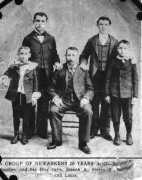
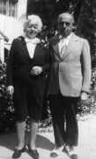
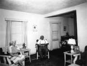
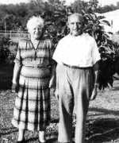

Samuel Braelow

(2) 1892, c., With his father and brothers.
(2b) 1903, With family.
(2) 1934, c., With wife Dora Shapiro.



(2) 1940, c., c. 1940, with wife
(2) 1950, c., With second wife, Mary.
(2) 1950/12/25, With wife Mary Brodsky Braelow.
(1) 1957, c., With wife Dora.